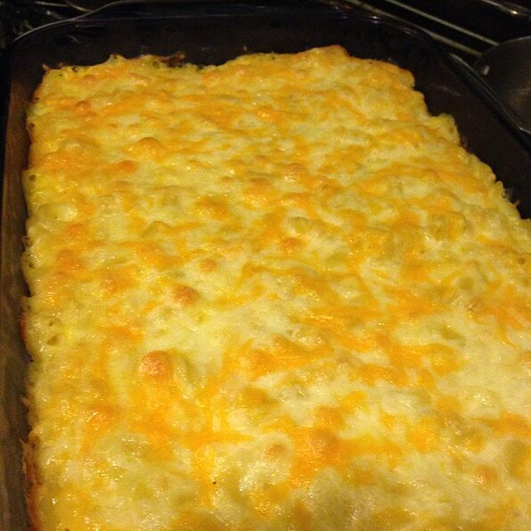

Macaroni Recipe

Quick and easy macaroni, cheese soup, milk and Colby cheese!
This quick and easy mac n cheese is the best thing ever!
Cheesy and never runny!
Ingredients
- 1 (16 ounce) package macaroni
- 1 (10.75 ounce) can condensed Cheddar cheese soup
- 1 cup milk
- 1 pound shredded Colby cheese
Steps
- Preheat oven to 350 degrees F (175 degrees C).
Bring a large pot of lightly salted water to a boil.
Add pasta and cook for 8 to 10 minutes or until al dente; drain.
- Place macaroni in a 2 quart casserole dish.
Stir in cheese soup and milk until well combined.
Sprinkle with shredded Colby.
- Bake 25 to 30 minutes, or until
cheese is brown and bubbly.